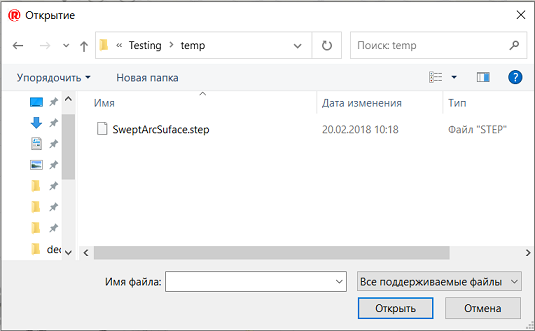
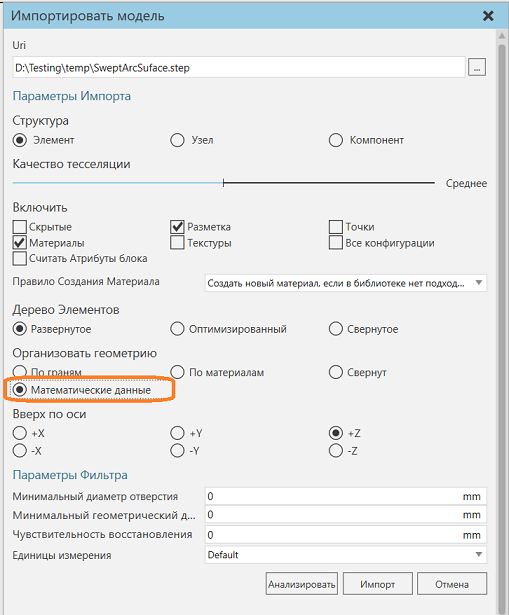
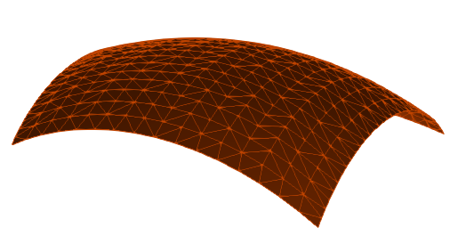
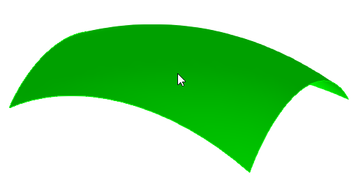
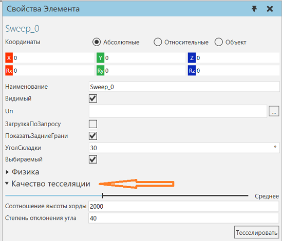
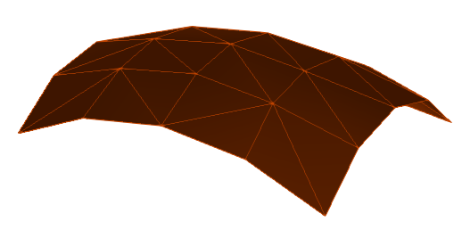
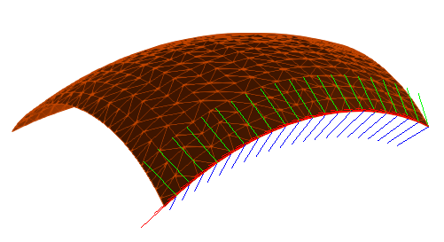

Импорт математических данных |
|
Вы можете импортировать математические данные поддерживаемого файла САD, например, представления границ (BREP) и кривые. Примечание: Эта задача была сделана с использованием этого CAD-файла. 1.Либо на вкладке Главная, либо на вкладке Моделирование в группе Импорт нажмите Геометрия. 2.Выберите файл САD, который вы хотите импортировать как новый компонент.  3.В области задач Импортировать модель, под Организовать геометрию, нажмите Математические данные. Это позволит организовать геометрию по одному набору треугольников на грань и сохранить объект BREP в наборе треугольников.  4.Нажмите импорт чтобы импортировать файл.  После импорта математических данных у вас есть возможность изменить тесселяцию геометрии на уровне объекта. 5.Перейдите на вкладку Моделирование, а затем выберите элемент Геометрия, содержащий импортированную геометрию.  6.На панели Свойства элемента, раскройте Качество тесселяции. Этот раздел позволяет модифицировать тесселяцию наборов геометрии, тем самым делая ее более грубой или тонкой. Например, вы можете использовать ползунок для выбора параметра «Сверхнизкий», «Низкий», «Средний», «Высокий» или «Сверхвысокий». Вы можете настроить этот параметр, отредактировав свойства Отношение высоты хорды и Степень допуска угла.  7.Выберите Качество тесселяции на Сверхнизкий, а затем щелкните Тесселировать. Это разбивает геометрию с использованием меньшего количества треугольников и делает ее более грубой. Этот процесс обратим, потому что математические данные не были выгружены из элемента Геометрия.  8.Выполните любое из следующих действий: ·Чтобы изменить качество тесселяции объекта Геометрия, повторите шаг 7. ·Чтобы удалить математические данные из элемента Геометрия, в трехмерном мире щелкните правой кнопкой мыши и выберите Инструменты, а затем щелкните Выгрузить математические данные. Это навсегда и удалит возможность редактировать качество тесселяции объекта Geometry на панели свойств объекта. Математические данные геометрии можно использовать с API. Например, вы можете создать скрипт Python для доступа к топологии набора геометрии, а затем использовать топологию для создания других объектов, таких как фреймы, точки и положения пути. Пример. Используйте топологию для создания Систем Координат вдоль кривой 
|